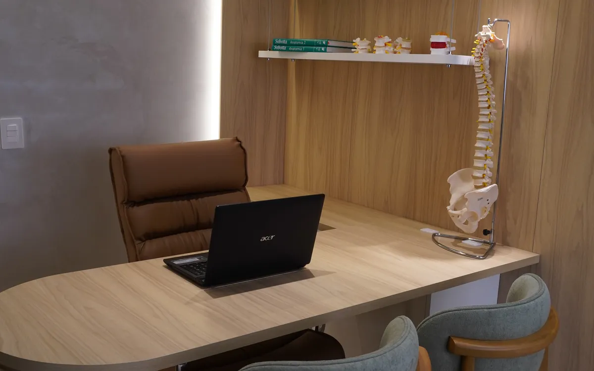

Novo atendimento
Recovery para quem treina
Liberação miofascial e bota pneumática para recuperação muscular entre treinos, provas e semanas de volume alto.
Recuperação também é treino
Quem corre, faz academia ou treina forte sabe que o ganho não acontece no esforço: acontece na recuperação entre um estímulo e outro. Quando essa parte fica de fora, a fadiga se acumula.
O recovery é um trabalho voltado a essa fase. Combina liberação miofascial com bota de compressão pneumática, e costuma ser usado depois de treinos intensos, após provas ou em semanas de volume maior.
É um serviço de recuperação e performance — diferente do tratamento de dor. Se existe uma lesão ou uma dor que não passa, o caminho começa por uma avaliação.

Como funciona
Dois recursos, uma sessão.
Liberação miofascial
Trabalho manual sobre a musculatura e a fáscia das regiões mais exigidas pelo seu esporte, com foco em reduzir a sensação de rigidez e devolver amplitude.
Bota pneumática
Compressão sequencial nas pernas, ajustada em pressão e tempo conforme o momento do seu ciclo de treino. Usada como recurso de recuperação pós-esforço.
Para quem
Perfis que buscam recovery.
- Corredores de rua em preparação ou em semana de prova
- Praticantes de musculação e cross training com rotina intensa
- Atletas amadores que competem nos fins de semana
- Quem retomou os treinos e sente a carga acumulando
O recovery é conduzido pelo Thiago, fisioterapeuta responsável pelas frentes de recovery e ortopedia da clínica. Recuperação não substitui diagnóstico: dor persistente pede avaliação.